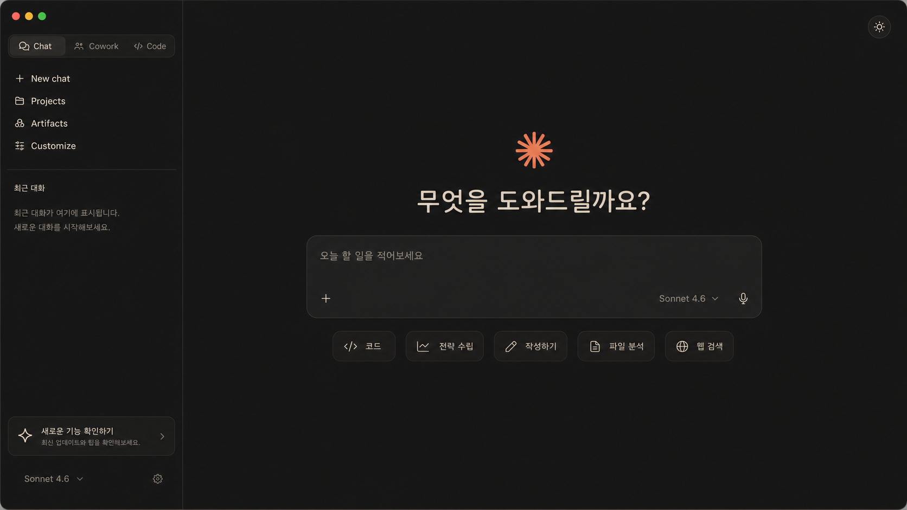
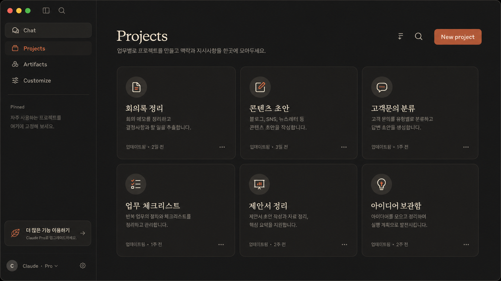
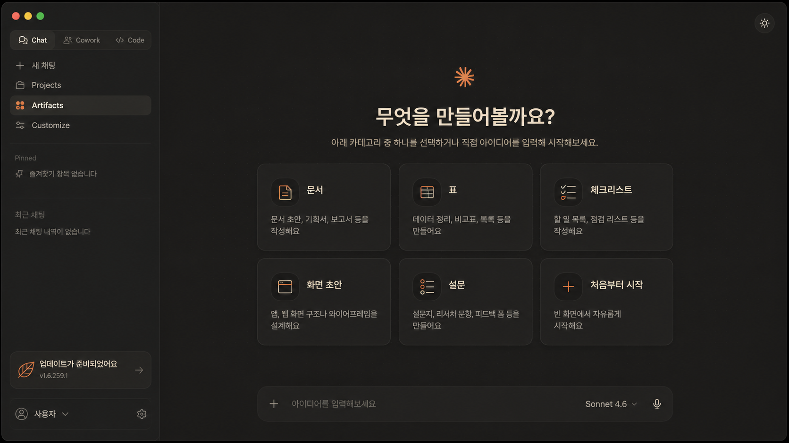
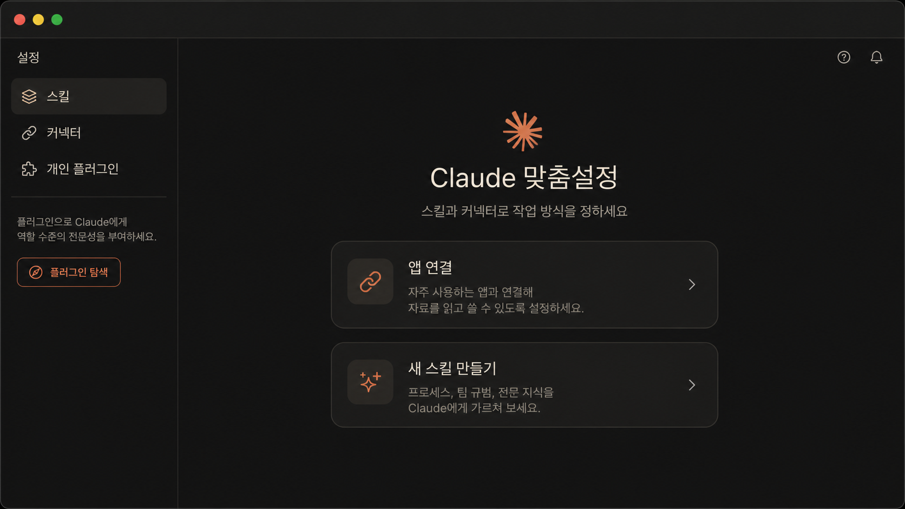

개인 정보나 실제 대화가 들어가지 않은 가이드용 예시 이미지입니다. 실제 Claude Desktop 메뉴 위치와 명칭은 요금제와 업데이트에 따라 달라질 수 있습니다.
1. Claude Desktop 앱 먼저 설치하기
Claude를 업무 도구처럼 쓰려면 웹에서 질문만 해보는 것보다 Desktop 앱을 설치해두는 편이 좋습니다. 프로젝트, 파일, 아티팩트, Claude Code 관련 흐름을 이어서 익히기 쉽습니다.
1
공식 다운로드 페이지 열기아래 버튼을 눌러 Claude Desktop 공식 문서 페이지로 이동합니다.
2
내 운영체제에 맞게 설치Mac 또는 Windows 등 본인 환경에 맞는 설치 파일을 내려받아 설치합니다.
3
로그인 후 첫 대화 열기설치가 끝나면 로그인하고, 이 가이드의 첫 요청 프롬프트를 그대로 붙여넣어 테스트합니다.
2. Claude는 검색창이 아니라 작업 상대입니다
검색창처럼 한 줄 질문을 던지면 답도 흐릿해집니다. Claude에게는 “무엇을 만들지, 어떤 자료를 볼지, 어떤 형식으로 받을지”를 같이 알려주는 편이 좋습니다.
3. Projects: 반복 업무를 방으로 묶기
프로젝트는 “매번 같은 설명을 다시 하지 않기 위한 방”입니다. 회의록, 콘텐츠, 고객문의처럼 반복되는 일부터 하나만 만들어보세요.
1
새 프로젝트 만들기Projects에서 새 프로젝트를 만들고 이름을 “회의록 정리”처럼 업무명으로 붙입니다.
2
프로젝트 지시사항 넣기항상 지켜야 할 말투, 출력 형식, 금지할 내용을 적습니다.
3
자료 넣고 첫 작업 시키기회의 메모, 기존 문서, 예시 결과물을 넣고 아래처럼 요청합니다.
이 프로젝트는 “회의록 정리”용이야.
앞으로 내가 회의 메모를 붙여넣으면 아래 형식으로 정리해줘.
1. 결정사항
2. 할 일: 담당자 / 마감일 / 다음 행동
3. 확인 필요
4. 5줄 요약
말투는 담백하게, 추측은 하지 말고 “확인 필요”로 표시해줘.

Projects는 반복 업무를 방처럼 묶는 곳입니다. 예시는 모두 가상의 업무명으로 구성했습니다.
4. Artifacts: 말로만 받지 말고 결과물로 보기
Artifacts는 Claude가 만든 결과물을 옆 화면에서 바로 확인하는 방식입니다. 문서, 표, 체크리스트, 간단한 HTML 화면처럼 “눈으로 봐야 고칠 수 있는 것”에 쓰면 좋습니다.
체크리스트 아티팩트
업무 절차를 한 장짜리 체크리스트로 만들 때
아래 업무 절차를 한 페이지 체크리스트 아티팩트로 만들어줘.
각 항목은 체크박스 형태로 나누고, 초보자가 헷갈릴 부분은 “주의”로 표시해줘.
자료:
[업무 절차 붙여넣기]
표/분류 아티팩트
고객문의, 아이디어, 회의 내용을 분류할 때
아래 고객 문의를 표 아티팩트로 정리해줘.
열은 “문의 내용 / 유형 / 긴급도 / 답변 초안 / 확인 필요”로 만들어줘.
자료:
[문의 목록 붙여넣기]
간단한 화면 초안
아이디어를 실제 화면처럼 보고 싶을 때
내가 설명하는 기능을 모바일 화면 초안 HTML 아티팩트로 만들어줘.
목표 사용자는 비개발자이고, 버튼은 3개 이하로 단순하게 해줘.
기능 설명:
[아이디어 붙여넣기]
비교표 아티팩트
선택지가 여러 개라 판단이 필요할 때
A안과 B안을 비교표 아티팩트로 만들어줘.
비교 기준은 비용, 시간, 리스크, 오늘 바로 할 수 있는 일로 해줘.
마지막에 추천안을 하나만 골라줘.
자료:
[비교할 내용 붙여넣기]

Artifacts는 말로만 답을 받는 대신 문서, 표, 화면 초안처럼 눈으로 확인할 결과물을 만들 때 유용합니다.
5. Customize: 기본 말투와 연결을 세팅하기
Customize는 Claude가 나를 어떻게 도와주면 좋은지 기본값을 잡는 곳입니다. “내 일은 이런 식으로 도와줘”를 짧게 적어두면 매번 설명하는 시간이 줄어듭니다.
나는 코딩 경험이 없는 비개발자 직장인이야.
답변은 한국어로, 어려운 용어는 먼저 쉬운 말로 풀어줘.
업무 결과물은 바로 복사해서 쓸 수 있게 표, 체크리스트, 짧은 문단 중 하나로 정리해줘.
모르는 내용은 추측하지 말고 “확인 필요”라고 표시해줘.
처음에는 길게 쓰지 마세요. “내 상황 / 원하는 말투 / 출력 형식 / 금지할 것” 네 줄이면 충분합니다.

Customize에서는 스킬과 커넥터처럼 Claude가 나와 함께 일하는 방식을 정하는 설정을 확인할 수 있습니다.
6. 커넥터: 자주 쓰는 앱 자료를 Claude와 연결하기
커넥터는 Claude가 외부 앱의 자료를 참고하게 하는 연결입니다. 계정과 요금제에 따라 보이는 앱은 다를 수 있지만, 보통 아래 같은 업무 앱을 연결 후보로 봅니다.
△
Google DriveM
Gmail31
Calendar#
SlackN
NotionGH
GitHubJ
JiraC
Canva1
연결 전 확인Claude가 볼 수 있는 폴더와 워크스페이스 범위를 확인합니다.
2
민감정보 제거고객정보, 결제정보, API 키, 비공개 계약서는 먼저 빼고 연습합니다.
3
연결 후 첫 요청처음부터 자동화하지 말고 “이 자료에서 무엇을 읽었는지”부터 확인합니다.
연결된 자료 중 [폴더/문서 이름]만 참고해서 정리해줘.
먼저 네가 참고한 자료 제목을 3개까지 보여주고,
그 다음 핵심 내용 5줄과 내가 확인해야 할 질문 3개를 뽑아줘.
추측은 하지 말고, 자료에 없는 내용은 “자료에 없음”이라고 표시해줘.
7. Skills: 자주 하는 일을 명령어처럼 만들기
Claude Code에서는 반복 절차를 스킬로 만들어 /스킬이름처럼 불러올 수 있습니다. 예를 들어 매번 “회의록 정리 방식”을 설명했다면 스킬로 빼두면 됩니다.
mkdir -p ~/.claude/skills/meeting-summary
cat > ~/.claude/skills/meeting-summary/SKILL.md <<'EOF'
---
name: meeting-summary
description: 회의 메모를 결정사항, 할 일, 확인 필요로 정리할 때 사용
---
# 회의록 정리 스킬
회의 메모를 받으면 아래 순서로 정리한다.
1. 결정사항
2. 할 일: 담당자 / 마감일 / 다음 행동
3. 확인 필요
4. 5줄 요약
주의:
- 원문에 없는 내용은 추측하지 않는다.
- 담당자나 마감일이 없으면 “확인 필요”로 표시한다.
- 말투는 담백한 업무 메모체로 쓴다.
EOF
/meeting-summary
아래 회의 메모를 정리해줘.
[회의 메모 붙여넣기]
Skills는 Anthropic Claude Code 공식 문서의 SKILL.md 구조를 초보자용 예시로 줄여 정리했습니다.
8. 처음엔 이 3개만 시켜보세요
요약
긴 글을 핵심 5줄과 확인할 점으로 줄이기
긴 글을 핵심 5줄과 확인할 점으로 줄이기
정리
회의 메모를 결정사항, 할 일, 확인 필요로 나누기
회의 메모를 결정사항, 할 일, 확인 필요로 나누기
초안
이메일, 공지, 제안서 첫 문단처럼 빈 화면을 채우기
이메일, 공지, 제안서 첫 문단처럼 빈 화면을 채우기
9. “뭘 시켜야 하지?” 싶을 때는 이렇게 물어보세요
요약부터
“이 글을 5줄로 줄이고, 내가 확인해야 할 질문 3개를 뽑아줘.”
정리부터
“아래 메모를 결정사항 / 할 일 / 확인 필요로 나눠줘. 할 일은 담당자와 마감일 칸을 비워둬.”
초안부터
“이 내용을 바탕으로 팀장에게 보낼 짧은 보고 메시지 초안을 써줘. 너무 딱딱하지 않게.”
비교부터
“A안과 B안을 표로 비교해줘. 비용, 시간, 리스크, 오늘 바로 할 수 있는 일 기준으로 봐줘.”
처음 목표는 멋진 프롬프트가 아닙니다. 작은 결과물을 받고, 한 줄씩 다시 시켜보는 것입니다.
10. 첫 요청 복붙 프롬프트
아래 내용을 보고, 내가 바로 확인할 수 있게 정리해줘. 목표: [요약 / 회의록 정리 / 초안 만들기 중 하나] 대상: [누가 읽는지] 원하는 형식: [표 / bullet / 짧은 문단] 주의할 점: 모르는 내용은 추측하지 말고 “확인 필요”라고 표시해줘. 자료: [여기에 메모나 글을 붙여넣기]
11. 결과가 별로일 때 이렇게 고치세요
- “너무 길어. 핵심만 5줄로 줄여줘.”
- “표로 바꾸고, 실행할 일만 따로 빼줘.”
- “비개발자도 이해하게 쉬운 말로 바꿔줘.”
- “추측한 내용은 지우고, 원문에 있는 내용만 남겨줘.”
12. 파일과 커넥터를 쓰기 전 확인할 것
회사 내부자료, 고객정보, 이메일, 전화번호, 결제정보, API 키가 들어있다면 먼저 지우거나 가린 뒤 넣으세요. 커넥터를 연결할 때도 “Claude가 볼 수 있는 자료”가 어디까지인지 먼저 확인하는 습관이 필요합니다.
13. 이 화면까지 오면 1단계 성공입니다
새 대화 화면을 열었다.
Projects나 Customize가 어디 있는지 확인했다.
아티팩트 프롬프트 중 하나를 실행했다.
결과를 보고 기준을 한 줄 추가해 다시 시켰다.
다음 단계
첫 요청을 해봤다면, 이제는 Claude에게 일을 맡기는 순서를 익히면 됩니다. 질문이 아니라 업무 지시서로 바꾸는 방법을 이어서 보세요.
Claude 코워크 가이드 보기 →